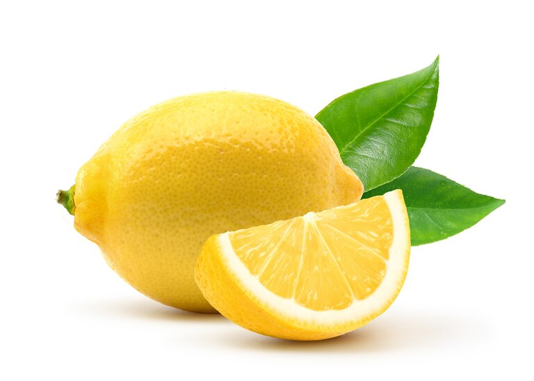

Mapishi Muhimu

Uji wa Haraka wa Ryan
- Ongeza vijiko 4 vya unga kwenye kikombe au bakuli.
- Ongeza maji baridi polepole hadi upate uji laini.
- Mimina maji ya moto au maziwa huku ukikoroga hadi upate unene unaotaka.
- Ongeza kitamu cha chaguo lako.
- Uji wako uko tayari!
Tofauti za Ladha

Lemorific (Ladha ya Ndimu)
- Tayarisha uji wako wa msingi.
- Ongeza nusu kijiko cha asidi ya citric na kijiko 1 cha maji ya ndimu.
- Koroga na kuongeza asali au sukari.
- Furahia ukiwa moto.

Coconutrific (Nazi Tamu)
- Tayarisha uji wako wa msingi.
- Ongeza kijiko 1 cha maziwa ya nazi au nazi iliyokunwa.
- Unaweza kuongeza maziwa ikiwa unapenda.
- Furahia ukiwa moto.